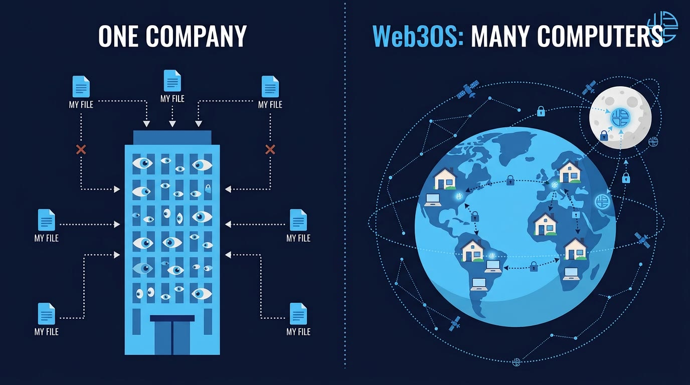

Your files live in a space no single company controls.
Encrypted file storage on many ordinary computers, with real payment for the people who keep and deliver files.
Join the testnet in our Telegram group (@Web3OS_Official) | Scam alert: we never message you first. Read the safety rules.
One company, or many computers?

- web3os.space is blockchain-based peer-to-peer (P2P) encrypted file storage.
- You use it through the web3os.space app. You need no "crypto" knowledge.
- Your files are encrypted on your device before they leave it.
| A normal cloud service | web3os.space | |
|---|---|---|
| Who keeps your files | One company | Many computers in many countries |
| Who can read your private files | The company can | Nobody: your files are encrypted on your device before they leave it |
| Who sets the rules and prices | The company, any time | Public rules that change only by a vote of the people who use it |
| If the company closes | Your files and purchases may be gone | There is no company to close; the network keeps running |
| Who earns when you buy a song or a video | Mostly the platform | Mostly the person who made it, paid automatically |
Creators get paid

- Publish your videos, music or writing. You receive the largest share of every sale.
- Payment is automatic. A buyer can get a refund for a virus or a damaged file.
- Searching and previews are free. Good content ranks by usefulness, not by advertising.
Stay safe

- Only a few accounts are official. We never message you first.
- Nobody from us ever asks for your recovery words, keys, passwords or coins.
- The network is in its test stage. Test coins are free and worth nothing.
- The real coin does not exist yet. Anyone selling "Web3OS coins" or asking for a deposit today is a scammer.
- Even after the main network starts, the project sells no coins. A listing on an exchange happens only after a community vote.
Lend your spare space

- Lend spare disk space and internet upload speed from a Linux or Windows computer.
- You keep encrypted pieces you cannot read. The network checks them and pays you.
- The reward is real network money, not points stuck on one site.
Where do I start?
Users
- Make a free account in the app. You need no ID card.
- Search and preview at no cost. Store your files privately for a small fee.
Lend your PC
- Keep one Linux or Windows computer on for a few weeks on the test network.
- Sign up in the Telegram group (@Web3OS_Official). We send you the steps.
Creators
- Publish for free up to an allowance. Earn the largest share of every paid download.
- Register as the owner of your work to receive your earnings in full.
Details
What is web3os.space?
web3os.space is blockchain-based peer-to-peer (P2P) encrypted file storage, with a payment for the computers that keep and deliver the files. The name says what it is: a space where your files live.
- You use it through the web3os.space app.
- You do not need to know anything about computers, coins or "crypto".
Where are my files kept, and what if a computer is slow?
- Your app encrypts your file on your own device and cuts it into small pieces.
- Many ordinary computers around the world keep the pieces. The pieces are written in a code only you can read.
- The network keeps checking that the pieces are still there. It pays only the computers that pass the check.
- When you download, your app collects the pieces from several computers. It does not take the whole file from one company's server.
- If one computer is slow, your app asks the next computer that holds the same piece.
- A slow computer is skipped for that piece, so one slow sender does not hold back your download.
- The computer that answers quickly delivers the piece and is paid in the project's own coin, WEB3OS.
- The network checks every delivery before it pays. This check is called proof of fast delivery, or PoFD.
- With PoFD, the downloader's app confirms that the piece really arrived. Only then is the sender paid.
- Your private files stay encrypted on your device. Nobody else can open them, read them or see your file list.
- One small limit: someone who already has exactly the same file can check that a copy of it is stored somewhere on the network.
- That person cannot tell whose copy it is. They never learn that you have it or who you are.
FAQ: files, sharing and searching
Can I share and download files with it?
- Yes. You can share and download your own files and lawfully shared files, peer to peer.
- Your app collects the pieces of a file from several computers.
Does searching cost anything?
- No. Looking around, searching and watching previews cost nothing, up to a generous daily amount (for example 200 searches a day).
- Good content is ranked by how useful people find it. An advertisement cannot buy a higher rank.
What about viruses and illegal files?
- Known viruses, disguised files and known illegal content are stopped automatically when someone tries to publish them.
- A brand-new virus can still slip through. This is why buyers can get their money back.
Can I buy and sell videos, music and books?
- Yes. The person who made a work gets the largest share of every sale, paid automatically.
- A buyer who gets a virus, a damaged file or something that is not what it said can get the money back.
How do I start as a user?
- Anyone can start here. Make a free account in the app (no ID card).
- Search, browse and watch previews at no cost.
- Put your photos, videos and documents in your own private space. You pay a small storage fee for the time you choose.
- Your files stay private unless you decide to share them.
- When you download something you bought, the pieces come from the computers that hold them.
- You pay the person who made it and the computers that deliver it, not a middleman.
- What you buy can go into your private space.
I make videos, music or writing. What is in it for me?
- You publish and receive the largest share of every paid download, paid automatically.
- The app helps with previews. Publishing is free up to an allowance.
- To receive your earnings in full, register as the owner of the work.
- Until then, most of the money waits safely. Someone who copies your work cannot collect it.
- Publishing cannot be undone. Publish only what you are happy to share.
Is it finished?
- No. web3os.space is in its test stage.
- Storage, sharing, search, and buying and selling files run on a test network.
- The test network uses free coins that are worth nothing, so mistakes cost nothing.
FAQ: payments, the coin and investment
Why does it need a payment at all?
- Peer-to-peer sharing without a reward has a known problem.
- You leave your computer on and send pieces to strangers. You get nothing back.
- So most people stop sharing as soon as their own download finishes, and the file slowly disappears.
- web3os.space keeps the good part of peer-to-peer sharing: many computers send many pieces at once.
- It makes the reward real. Whoever keeps and delivers pieces is paid.
- The network, not the sender's own word, decides what was really delivered.
How do payments work?
- web3os.space keeps its own public record book of every payment. It is a blockchain called Web3OSChain.
- Many computers keep the record together, so nobody can secretly change it. Anyone can check it.
- Everything is paid in one coin, WEB3OS. There is no second coin to buy just to pay fees.
- Small payments are added up and settled together. You see every price before you agree.
What is the coin for?
- WEB3OS is the money of this shared network. Inside web3os.space it pays for everything.
- It pays for buying a video, a song or a book, and for keeping your own files.
- It pays for a name ending in .web3os for your page, like a web address, and for subscriptions.
- That use gives the coin its worth. Anyone who wants to buy something here needs coins.
- Most of what buyers pay goes to the person who made the work and to the computer owners who kept and delivered it.
- A computer owner can spend what they earned on what creators make.
- A creator can spend what they earned on storage.
- So the coin works like the local money of a small community: it pays for everything inside the network.
Is this a crypto investment?
- No. During the test stage the coin is a free test coin with no value.
- Nobody from web3os.space ever messages you to sell you coins.
- When the real network opens, you can spend the coins you earn inside it.
- You cannot send them to others or sell them until there is a big enough market for them. No date is promised.
- Prices can fall, even to zero. Nothing here is a promise of profit or investment advice.
Who gets the coins?
- No one gets a cheap pile of coins to dump on others.
- There is no presale and no private sale to any investor or fund.
- When the real network opens, about 80% of all coins can only be earned by computers that do work for the network.
- Only 4% exists on the first day:
- 2.5% to build liquidity for trading.
- 1% for security bug rewards.
- 0.5% to pay audit, legal and set-up bills. This is the only slice the project sells, at the market price.
- The team's 8% is paid out a little each week over about 80 months, never in one lump.
- Each of these shares sits in its own wallet whose address is published.
- Anyone can look up on the chain what each wallet holds and every coin it moves.
Can I get a refund?
- A refund claim needs a small deposit. You get it back when your claim is honest.
- "I watched the preview and changed my mind" is not a reason for a refund.
Who decides the rules and prices?
- The people who use it decide.
- People who set aside some coins as a voting deposit (about 100 US dollars' worth) can vote.
- They vote on the rules, the prices and how the shared fund is spent.
- No single person can outvote everyone. The team's own votes are capped.
How is it different from Filecoin, Chia, BitTorrent and others?
How does it compare, honestly?
- web3os.space is not "another Filecoin". Most other networks do one thing: keep files, or move files.
- web3os.space combines storage, search ranked by usefulness, and a marketplace where creators are paid.
- This combination sets it apart. It is also its biggest risk.
- It is weaker than the older networks in important ways. It is a test network today.
- It is smaller and newer, and its tokens have no value now.
Two differences matter most to people who lend their computer:
- On Chia, the disk is filled with "plots": puzzle data that keeps no one's files.
- The only use of plots is to take part in a reward draw. A bigger disk buys more chances, not more useful work.
- On web3os.space, the disk keeps real people's files. The network checks the work, and then the computer owner is paid. A draw never decides it.
- BitTorrent shares files for free. It added a separate token, BTT, mainly to tip for faster downloads.
- web3os.space has one coin only, WEB3OS. It pays for storage and delivery that the network has checked.
- A dash (—) in the table means we are not sure and do not guess.
| web3os.space | Filecoin | Storj | Arweave | IPFS (plain) | Ordinary cloud drive (Google Drive, Dropbox) | Chia | BitTorrent (with its BTT token) | |
|---|---|---|---|---|---|---|---|---|
| What a lent disk does | Keeps real people's files, paid after the network checks storage and delivery | Keeps clients' files | Keeps clients' files | Keeps the network's permanent files | Keeps the files its owner chose | The company's own disks | Holds puzzle data to enter a reward draw, a bigger disk means more chances | Shares the files its owner is downloading or seeding |
| Who keeps your files | Many ordinary computers around the world | Independent storage companies and computers | Independent computer owners, run by one company | Computers of the Arweave network | Whoever chooses to keep them | One company | Nobody: Chia disks hold puzzle data, not files | Whoever is sharing them at that moment |
| Can others read them | No: encrypted on your device first (someone who already has the identical file can check that a copy exists, not whose) | Only if you did not encrypt before uploading | No: encrypted on your device by default | Anyone: files are public | Anyone: files are public | The company can | Not a file service | Anyone in the share can download them |
| How you pay | The one coin WEB3OS, prices shown first | Its coin FIL | Monthly bill | Once, up front, in its coin AR | Nothing, but nobody is paid to keep your files | Monthly or yearly plan | Not a file service; its coin XCH goes to reward-draw winners | Free; the separate BTT token is optional, for faster downloads |
| Separate coin just for fees | No | — | — | — | — | No | — | — |
| Can it disappear if a company closes | No company to close | No single company | Depends on one company | No single company | Files fade if nobody keeps them | Yes, files may be gone | Not a file service | Files fade when nobody shares them |
| Do helpers get paid for fast delivery | Yes, after the network checks the delivery | — | — | — | No | No | No | Only by optional BTT tips |
| Can you sell your own films and music in it | Yes, the maker gets the largest share | No | No | No | No | — | No | No |
| How long files are kept | Prepaid for the period you pay for, renewable; old, low-value files nobody downloads may be removed | For the contract term | For the contract term | Pay once, kept for good | Not promised | While you pay | Not a file service | While someone shares them |
| Search by usefulness | Yes | No | No | — | No | Only your own files | No | No |
| Stage today | Test network, not yet launched, unproven at large size | Live network, about 2.1 EiB stored | Live | Live for years | Mature | Mature | Live since 2021 | Mature: file sharing since 2001, BTT since 2019 |
This comparison is our own summary. Please check each project's own site before you decide.
Safety, anti-scam checklist and recovery words
Can anyone see my private files?
- No. Your private files are encrypted on your device before they leave it. The encryption and splitting are described under "Where are my files kept, and what if a computer is slow?".
- The one small limit about identical files is described there too.
How are my files kept safe?
- Your phone or computer cuts and encrypts the files before they leave it.
- The network keeps checking that the pieces are still there. It pays only the computers that pass the check.
What are my recovery words?
- They are a list of words the app shows you when you make your account.
- They are the only master key to your account.
- Write them on paper and keep them safe.
- Never type them into a website. Never give them to anyone, not even someone who says they are from web3os.space.
How do I spot fake accounts?
- Scammers copy our name and logo.
- Our only official accounts are listed below.
- We never message you first. We never ask for recovery words, keys, passwords or coins.
Official accounts (anti-scam).
- Telegram: the group Web3OS.space at @Web3OS_Official.
- X: @Web3OS_space, for news only.
- GitHub: the organisation Web3OS-space.
- Mail: addresses ending in @web3os.space.
- The project never contacts anyone first. It replies only in a conversation the other person started.
- We reply only in the Telegram group. Questions and discussion happen in that one group, nowhere else.
- Nobody from web3os.space ever asks for your recovery words, private keys or passwords.
- Nobody from web3os.space ever asks you to send coins, sells coins, or runs a presale or token sale.
- The real coin does not exist before the main network starts, so there is no official coin address yet. Any address shown to you as ours is fake.
- When the main network starts, the project's own addresses (treasury, liquidity pool, team vesting) are published here and in the network's public start file, for checking only. Never send coins to them: the project has no deposit address.
- Even after the main network starts, the project sells no coins. A listing on an exchange happens only after a community vote that pays for it from the treasury.
- Anyone who does is a scammer, whatever name or logo they use. Do not answer, and tell us in the group.
Lend your computer: what it needs and how it earns
Why would I get paid for lending my computer?
- Some sharing communities reward uploads with site points.
- Those points work only on that one site and cannot be moved or used for anything else.
- They are gone if the site closes.
- On web3os.space the reward is real money of the network.
What do I do, and can I see what I store?
- You need a Linux or Windows computer that is often on.
- You lend its spare disk space and internet connection.
- You keep pieces of other people's files and send them when someone downloads.
- The pieces are encrypted before they reach you, so you cannot see what is inside them.
- You are paid in WEB3OS coins for every piece you keep. The network itself checks this, not what your computer claims.
- You are also paid for every download you deliver.
- These coins are not points stuck on one site. You can spend them on anything inside web3os.space (see "What is the coin for?" in the payments FAQ).
- Today this runs on the test network with free test coins. To join, see "Join us" in this section.
What does my computer need?
A fast upload, not only disk space.
- Much of the pay comes from sending pieces to people who download them.
- Sending uses your connection's upload speed. This is the direction used when you send a video or a backup.
- It is not the download speed that internet plans usually advertise.
- Many home plans upload far slower than they download, for example 1,000 Mbps down but only 100 Mbps up, or less.
- When someone downloads, their app takes each piece from a computer that answers quickly.
- If yours is slow to answer, the app moves on to another computer that holds the same piece. That computer is paid for the delivery.
- A slow disk slows your answer too.
- The computers paid to keep the main copies need a solid-state drive (SSD, the fast kind of disk in most new laptops).
- An ordinary hard disk can still keep and deliver extra copies.
- Before you join, run a free speed test on the computer you plan to use. Look at the upload number.
- A computer that is on day and night with a fast, stable upload earns more.
- A computer with a slow upload can still keep pieces and pass the checks, but it wins few deliveries.
Copyright, owners and reports
Can I put someone else's film, song or book on it?
- Anyone may bring any public file onto web3os.space, including films, music and books made by other people.
- The aim is to keep the world's files in one place that no company can close.
- Bringing a work here is promotion.
- The person who uploads it earns a promotion reward. It is 1% of the creator's share of what the work earns each week, for the disk space and time they gave.
- A brand-new account receives less of it until it has been here a while.
- The rest of the creator's share is kept aside for 26 weeks for the real owner of the work.
What if the real owner comes forward?
- The real owner shows their proof on the work's page.
- A few users picked at random look at it together, like a jury.
- If the owner is right, the owner decides: keep the work up, or take it down.
- If the owner keeps it up, the creator earnings kept aside so far and all later ones go to the owner.
- Nobody's purchase is undone. The money buyers paid stays with the work and goes to its real owner.
- Keeping it up counts against no one.
- Only when the owner chooses to take a work down does it count on the record of the account that put it up.
- Only repeated removals limit that account. The law asks every platform to have this rule.
- If no owner ever comes forward, most of the kept-aside money goes to a public fund. The fund looks after the works on the network.
How do I report a harmful file?
- Anyone can point out a harmful file.
- The users who look at cases carefully get a small reward.
- A report made only to cause trouble costs its sender a small deposit.
- Every decision follows these fixed public rules.
Join us: testers, miners, attackers and partners
How do I take part?
- This is the first public release. The test network is live and open to everyone.
- What we need most now is people who test the programs.
- web3os.space is looking for testers and for attackers: people who try to break it.
- Talk with us and other users in our Telegram group (@Web3OS_Official).
- To sign up, post in the group which group you are in and a little about yourself. We reply there.
- If you have no Telegram account, write to contact@web3os.space.
- For news, follow us on X.
- Found a bug? See "Found a bug? Report it and earn coins" below.
Who we are looking for
- Owners of Linux and Windows computers (miners): keep one computer on for a few weeks on the test network. Report problems and tell us what was confusing. Sign up in the Telegram group above and we send you the steps.
- Testers with an iPhone: we have no iPhone, so the iPhone version is not yet tested on one. You can help without running a node.
- Attackers: on the test network, try to cheat it from your own computer and your own accounts. Try to get paid without keeping the pieces, download without paying, read a file that is not yours, or fool a vote or a report. Coins on the test network are worthless, so this is the time to test it as hard as you can. Never touch anyone else's computer or data.
- Investors and partners: follow us on X to hear first, and write to contact@web3os.space. Nothing on this site is an offer to sell coins or shares.
Found a bug? Report it and earn coins
- Open a GitHub issue (you need a free GitHub account). Write what happened, what you did just before, and on which computer, phone or TV. A screenshot helps.
- A security problem is one that could let someone steal coins or read other people's files. Never post it in public. Email contact@web3os.space with SECURITY in the subject.
- When a bug you were the first to report is fixed in a new version, we write it in a public list next to your GitHub username, with how serious it was. A more serious bug earns more.
- After the main network starts, the community votes on paying the whole list in WEB3OS coins. Like every reward on the network, the coins are held back. You can use them on the network at once (fees, storage, votes). You cannot send them to another account until the rule that releases all network rewards is met, which may take a long time. No date is promised, and it may not happen.
- To be paid, put your GitHub username in your Web3OS profile. Post your wallet address for the main network in a comment on your own issue. Post it from the GitHub account whose numeric user id is recorded in the list. The address is then written into the list. The payout vote names the exact version of the list it pays, so check your row before the vote. A comment edited by anyone but its author is not a claim. If you reported by email, name your GitHub account in the email. After the fix we open the issue and you claim there.
- No payment goes to a party on a sanctions list. Payment to US recipients waits for a legal opinion. Any tax on a reward is your own matter.
- This is a promise to record and to put the payment to a vote, not a guarantee of payment. The vote decides.
- Project team members and project accounts are not paid for bugs.
- Test-network coins have no value and are not exchanged for real ones.
- A way to cheat or break the network counts as a bug too.
- Look for problems only on your own computer, phone and accounts, never on someone else's.
Contact, legal notices and copyright agent
Web3OS Labs LLC provides web3os.space and the web3os.space app. Postal address: Web3OS Labs LLC, 30 N Gould St Ste R, Sheridan, WY 82801, United States. Every address below reaches a person; languages: English, Chinese.
| Purpose | Address |
|---|---|
| Authorities and law enforcement (EU Digital Services Act Art. 11) | legal@web3os.space |
| Users (EU Digital Services Act Art. 12) | contact@web3os.space |
| Help with the app | support@web3os.space |
| Security problems (SECURITY on the subject line) | contact@web3os.space |
| Report illegal content or abuse (include the share link or content address) | abuse@web3os.space |
| Copyright notices and counter-notices | dmca@web3os.space |
| Privacy and personal data requests | privacy@web3os.space |
Copyright notices. Web3OS Labs LLC has designated a copyright agent under 17 U.S.C. 512(c), listed in the U.S. Copyright Office DMCA Designated Agent Directory as DMCA-1086677 (Copyright Agent, address above, dmca@web3os.space). The notice requirements, counter-notices and the Taiwan Copyright Act Chapter VI-1 procedure are on the copyright notices page. Repeat infringers may lose access; a knowingly false notice can make the sender liable for damages under 17 U.S.C. 512(f).
License
License. This page is published under the Apache License 2.0; the protocol core is licensed under BSL 1.1. Its source is not public yet: the community decides by governance vote when it is published for audit. Each version becomes full open source no later than four years after its release, and earlier if the team stops maintaining it.